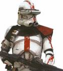

Forums galactiques > Taverne galactique : lieu de discussion informel > La Boîte à Blagues
| Amberle Réputation à la taverne : 59  03/06 ETU 12:06 | Score : 1 Détails Le nouveau Slogan de Windows devrait être : Hasta La Vista
| ||
| alien Réputation à la taverne : 13  03/06 ETU 12:43 | Score : 0 Détails Si on s'accroche un poids d'un kilo avec une corde à la couille gauche, et un poids de 2 kilos à la couille droite, quelle est la corde qui va casser en premier ?
- La corde vocale. | ||
| cdt stight fighter Réputation à la taverne : 0  10/06 ETU 14:50 | Score : -5 Détails
Ceci estvoici chat. Ceci estla chat. Ceci estmanière chat. Ceci estde chat. Ceci estoccuper chat. Ceci estun chat. Ceci estcon chat. Ceci estpendant chat. Ceci est20 chat. Ceci estsecondes chat. Lisez à la suite les mots écrits en rouge. | ||
| skipusien Réputation à la taverne : 188  12/06 ETU 14:14 | Score : 3 Détails Rendons hommage aux boulets d'Esperance...
Deux boulets de la Galaxie des Exilés visitent la Galaxie d'Esperence. Ils ont faim et s'arrêtent devant un stand de Hot-dogs à la taverne. "-Regarde, ils vendent des hot-dogs, ça veux dire chien chaud dans le langage commun de notre galaxie !" "-T'as déja mangé du chien ?" "-Allez, on en prends." Ils passent leur commande, et le plus boulet des deux regarde dedans pour savoir ce qu'il y a, et il se met à rougir puis demande à l'autre: "-T'as eu quel morceau, Toi ?..." Donc soyez gentils avec les notres... il y a pire à coté... | ||
| tuningman27 Réputation à la taverne : -43  12/06 ETU 14:41 | Score : -5 Détails que fais une blonde dans un aeroport ?
Elle donne du pain aux avions | ||
| tuningman27 Réputation à la taverne : -43 12/06 ETU 14:54 | Score : -10 Détails C est l histoire de deux brune et une blonde qui sont dans un pentencier en amerique et elle sont condamnees au poteau.Un jour un pretre viens leur lire un passage de la bible avant de passer au poteau.Le pretre leur dit que dans se penitencier ils ont peur des catastrophes naturel.Un jour plus tard la premiere brune va au poteau et celle ci se rappela se qu avait dit le pretre et quand le general du penitencier dit enjoue: la brune dit: raz de marree et tout le monde se barre en courrant et les autre filles la brune et la blonde se dirent que sa marche vraiment alors un jour plus tard l autre brune se rappela des paroles du pretre et quand le general dit enjoue l autre brune dit cyclone et tout le monde se barre en courrant la blonde ettait sur que sa marchai.Un jour plus tard la blonde va au poteau et la blonde se rappela des paroles du pretre et quand le general dit enjoue elle dit feu et elle se fit tuer
| ||
| Amberle Réputation à la taverne : 59 12/06 ETU 16:53 | Score : 6 Détails . <--- ça, c'est un point
, <--- ça c'est une virgule Vous a-t-on appris à l'école à vous en servir? | ||
| skipusien Réputation à la taverne : 188 18/06 ETU 16:07 | Score : 5 Détails Bon, comme y a pas de bonne humeur dans l'air ambiant, je vais tenter de le changer...
20 truc à connaitre pour ne pas mourir inculte: 1. Le nom entier de Donald , est Donald Fauntleroy Duck 2. En 1997, les lignes aériennes américaines ont économisé 40.000 dollars en enlevant une olive de chaque salade. 3. Une girafe peut nettoyer ses oreilles avec la langue . 4. Des millions d'arbres sont plantés par accident par les écureuils, en enterrant des graines et en oubliant où ils les ont mis. 5. Manger une pomme est plus efficace qu'un café pour rester éveillé. 6. Les fourmis s'étirent le matin en se réveillant. 7. Les brosses à dents bleues sont plus utilisées que les rouges. 8. Le cochon est, avec l'homme, l' animal qui se brûle la peau au soleil. 9. Personne n'est capable de se lécher le coude, c'est impossible... 10. Seul un aliment ne se détériore jamais, le miel. 11. Les dauphins dorment avec un oeil ouvert. 12. L'oeil de l'autruche est plus grand que son cerveau. 13. Le "couac" d'un canard ne produit pas d'écho, et personne ne sait pourquoi. 14. Il est impossible d'éternuer les yeux ouverts. 15. Les statues grecques des hommes ont un petit pénis car cette partie représente la bestialité, ainsi un petit sexe représente la sagesse... spéciale dédicace à notre défunt cesco... xD (greque-romain...) 16. 111.111.111 x 111.111.111 = 12.345.678.987.654.321 17. L'odeur des pieds humains excite sexuellement les chiens ! 18. Vous dépensez 150 calories par heure en vous cognant la tête sur un mur. 19. Si vous pétez continuellement pendant 6 ans et 9 mois , assez de gaz est produit pour créer l' énergie d'une bombe atomique ! D'ou le nombre élevé de BHA que je possède... et la dernière.... 20. A peu près 99% des personnes qui lisent ce message ont essayé de se lécher le coude! | ||
| cdt HALO Réputation à la taverne : 10  19/06 ETU 17:39 | Score : 1 Détails Petites blagues :
- je ne suis pas raciste, la preuve :"J'écris noir sur blanc" Pour la suivante, je sais elle va choquer les femmes mais bon ayez un peu d'humour^^ : - La journée de la femme pour moi c'est :"Laisse la vaiselle, tu la fera demain" - Fidélité un jour, divorsé pour toujours. - Dieu disait de partager :"Les riches auront la nourriture, les pauvres auront l'appétit. Voila et j'espère avoir réussi a faire rire quelqun^^. | ||
| Général Victa Réputation à la taverne : 364  19/06 ETU 17:48  | Score : 1 Détails Hahahahha
Ahem c'est finis ? Comment sa je te contraris,mais si, c'était drôle je t'assure. Parlant à part. Il arrive ce taxi volant? | ||
| cdt HALO Réputation à la taverne : 10 19/06 ETU 17:53 | Score : 2 Détails Alors c'est peut être vraie, tous le monde me dis que j'ai des talants d'humouristes^^.
ps : Ces blagues sont de ma création. | ||
| Etherin Réputation à la taverne : 50  20/06 ETU 10:37 | Score : 2 Détails Mon chef,
Mon chef est toujours en train de travailler à son bureau avec assiduité et diligence, sans jamais perdre son temps en jasant avec ses collègues. Jamais il ne refuse de passer du temps pour aider les autres et malgré cela, il termine ses projets a temps. Très souvent, il rallonge ses heures pour terminer son travail, parfois même en sautant les pauses café. C’est une personne qui n’a absolument aucune vanité en dépit de ses accomplissements remarquables et de sa grande compétence en informatique. C’est le genre d’employé de qui on parle avec grande estime et respect, le genre de personne dont on ne peut ce passer. Je crois fermement qu’il est prêt pour la promotions qu’il demande, considérant tout ce qu’il nous ap- porte. L’entreprise en sortira grande gagnante. Maintenant, relire le texte en ne lisant qu’une ligne sur deux | ||
| chacal Réputation à la taverne : -39  20/06 ETU 21:24 | Score : 0 Détails j'ai un probleme je me suis perdu je cherche la salle des psy ses par ou?
| ||
| Leyrn Morpheus Réputation à la taverne : 175  20/06 ETU 22:32 | Score : 4 Détails J'ai un dicton! M'en va vous le compter.
Qui boit s'enivre. Qui s'enivre s'endort. Qui dort ne pèche pas. Qui ne pèche pas, va au paradis. Moralité: Buvons! | ||
| M.HILTON Réputation à la taverne : 5  21/06 ETU 07:10 | Score : 0 Détails Peut-etre que tous le monde la connait mais bon défois c'est marrant de la redire:
Quelle est la différence entre un baril de lessive et un poste de police ? Dans le baril de lessive on est sûr d'avoir au moins un agent actif escusez moi les policier | ||
| skipusien Réputation à la taverne : 188 21/06 ETU 16:40 | Score : 4 Détails Je suis con, mais je me soigne! (En 7 exercices)
Ce dossier est fait pour vous faire progresser afin d'être ou de paraître moins con... Si vous voulez continuer à écouter, c'est que soit vous êtes con, mais assez intelligent pour saisir la nuance entre con et intelligent et ainsi savoir que vous êtes con, c'est déjà un bon point, soit vous avez des cons dans votre entourage, dans ce cas quittez cette salle qui ne s'adresse qu'aux cons. ____1. Comment ne plus avoir l'air con: * * Le con parle pour ne rien dire. Ne dites rien. Vous ne direz rien d'intelligent, mais ça vous empêchera de dire des conneries. Vous y gagnerez. Au lieu de dire : "Quel con !", votre interlocuteur se dira: "Joue-t-il au con ?" C'est un premier point. * * Si vous avez vraiment envie de parler, ne vous retenez pas. Dites vos conneries. Et concluez : "Bon, j'arrête de déconner". Votre interlocuteur se dira : "Il joue au con !". C'est un deuxième point. ____ 2. Comment avoir l'air intelligent: Vous avez à votre disposition une série de mimiques qui donnent inévitablement l'air intelligent. Soyez assez cons pour les copier sans complexes. * * L'air entendu : Repérez la personne intelligente. Si vous êtes dans un groupe de dix, il y a neuf cons, dont vous. La personne intelligente c'est celle qui vous semble bizarre. Dès qu'elle dit quelque chose de bizarre, faites comme si vous compreniez. Même si vous n'y comprenez rien, les autres auront l'air plus con que vous. * * L'air pénétrant : Pensez très fort aux contraventions, aux impôts, à votre flotte emboutie. N'en parlez surtout pas, ça ferait con. Mais pensez-y. Si vous êtes vraiment très con, ça ne vous donnera pas l'air intelligent. Mais l'air emmerdé fait toujours bien quand on ne donne pas ses raisons. * * L'air pénétré : Même exercice que le précédent mais avec un compas dans le cul. Avantage : donne une dimension souffreteuse... ____ 3. Vous avez aussi à votre disposition une série d'attitudes: * * Le penseur de Rodin : Asseyez-vous. Mettez votre poing fermé sous votre menton et regardez dans le vide. C'est radical. Même si vous ne pensez à rien (ce qui est normal pour un con), il se trouvera toujours un autre con pour vous dire "A quoi penses-tu ?" * * L'air pénétrant : Ayez l'air du type qui n'en pense pas moins, pour corser, ayez l'air non seulement de comprendre, mais d'avoir votre idée pas con là-dessus, l'air pénétrant... * * Le rictus de connivence : Hochez un peu la tête de bas en haut. Appliquez l'air pénétré (le compas vous aide à crisper finement les maxillaires). ____ 4. Méfiez-vous des signes révélateurs involontaires de votre connerie !: * * Surveillez votre regard : Votre oeil vide et sans vie vous trahit. Par définition, vous êtes trop con pour avoir la pupille pétillante. Ne vous laissez pas abattre. Gardez l'oeil fixe. * * Fermez bien votre bouche : Rien ne fait plus con qu'une bouche entrouverte. Maîtrisez-vous : ne mâchez plus de chewing gum. Si vous êtes trop con pour exécuter en même temps les exercices oeil fixe - bouche close, utilisez le truc de la cigarette : tirez sur votre mégot et fixez la fumée. ____ 5. Comment passer pour quelqu'un d'intelligent: * * Ne perdez pas votre temps à lire des livres intelligents, à voir des films pensés... Vous n'y comprendrez rien et ça vous déprimerait. Lisez plutôt des critiques intelligentes. Apprenez-les par coeur et changez quelques mots. ____ Exemple : "Ce film a la beauté désertique d'une douleur sans fin" devient "Ce film a la beauté squelettique d'une couleur sans teint" . Vous ne plagiez pas vraiment et vous gagnez en hermétisme. L'hermétisme est le secret de ce troisième exercice. Quand vous dites des conneries, dites des conneries incompréhensibles. Les cons les prendront pour des finesses qu'ils ne comprennent pas et, double avantage, les gens intelligents se sentiront cons. * * Ne faites jamais de citations. Appropriez-vous les carrément. Mais attention, ne faites pas le con ! N'utilisez pas des citations trop connues. Si un autre con vous dit : "C'est de toi ça ?", ne prenez pas l'air confus. Ne doutez pas de vous. Votre connerie native vous y aidera. ____ 6. Méfiez vous des gens intelligents: Voilà. Maintenant, vous passez à peu de frais pour quelqu'un d'intelligent. Méfiez-vous ! Des gens intelligents vont venir vous poser des questions intelligentes. Vous allez être con pour y répondre. Comment faire ? Renvoyez la balle : "Pourquoi me poses-tu cette question ?" Quand vous ne pouvez plus la renvoyer, affrontez l'adversaire. Utilisez les quelques célèbres formules que répondront pour vous : Par ordre chronologique : * Tu vois ce que je veux dire... (la formule qui sauve) * Il me semble que tu limites le problème... (l'autre a l'air con) * Tu crois vraiment ce que tu dis ? (l'autre a l'air hypocrite) * C'est tout ce que tu trouvez à dire, ben merde ! (l'autre a l'air limité) * Tais-toi, tu m'atterres. ( l'autre a l'air très con) * S'il se tait, vous avez gagné. ____ 7. Ultime traquenard : la tentation de l'intelligence véritable Attention! Ne tombez pas dans ce panneau démoniaque ! Les gens intelligents sont malheureux. Ils ont compris qu'on était là pour vieillir et crever. Avant, il n'y a rien, après non plus, et pendant, on en chie. Comprendre, c'est perdre les avantages du con. C'est connaître le doute, la solitude, la marginalité odieuse, l'insomnie, l'angoisse, les battements de coeur, la souffrance. Et tout ça pour rien puisque vous serez toujours un con. Surtout, ne changez pas. Soyez assez intelligent pour rester con. Et longue vie. ;) edit: kevnz, elle a déja été dite avant^^ | ||
| kevnz Réputation à la taverne : 27  21/06 ETU 16:47 | Score : 1 Détails bonjours à tous !
voici les 10commandements de mon bahu : 1: Ne sèche pas un cour : sèche toute la journée . 2: N'embrasse jamais dans les couloirs: Les coins sont plus confortables . 3: Ne pousse pas dans les couloirs: Dans les escaliers, sa fait plus mal . 4: N'emprunte pas à tes amis: vole-les . 5: Ne copie jamais: décalque . 6: Ne fais pas de croche-pieds aux autres: Attend les profs. 7: Ne déchire pas tes livres: brule les c'est plus exitant ! 8: Ne parle pas en classe: crie, tu obtiendras plus d'attention . 9: Ne dépasse jamais 1 ou 2 personnes dans la file de la cantine: Dépasse toute la file, c'est mieux . 10: Si un prof se tue a t'expliquer: sois patient et laisse le mourir. voili voilou.... | ||
| Dark Ezeckiel Réputation à la taverne : 776  23/06 ETU 19:42 | Score : 1 Détails Règle 1 :
Le chef a toujours raison. Règle 2 : Dans le cas fort improbable où un subordonné aurait raison, l'idée du subordonné devient automatiquement l'idée du chef. Règle 3 : Le chef ne dort pas au travail. Il médite. Règle 4 : Le chef n'est jamais en retard. Il est retenu ailleurs. Règle 5 : Le chef ne quitte jamais son travail avant l'heure. On a besoin de lui ailleurs. Règle 6 : Le chef ne lit jamais son journal au travail. Il s'informe sur l'actualité économique. Règle 7 : Le chef ne prend jamais de liberté avec sa secrétaire. Il fait son éducation. Règle 8 : Le chef est toujours le chef. Même en slip de bain. Règle 9 : Quiconque entre dans le bureau du chef avec ses propres opinions doit en ressortir avec celles du chef. Règle 10 : Si vous avez un doute, conformez vous à la règle numéro 1. Règle 11 : Le chef n'insulte pas: Il donne des critiques constructives Règle 12 : Le chef n'est pas paresseux: Il prend une pause méritée. Règle 13 : Le chef peut donner des ordres et ne rien faire, car il est le chef. Règle 14 : Le chef n'aboie pas. Il est soucieux que tous entendent clairement ses paroles. Règle 15 : Voir Règle 1. | ||
| Dark Ezeckiel Réputation à la taverne : 776 23/06 ETU 19:58 | Score : 0 Détails Ambiance musicale conseillée: http://www.radioblogclub.com/open/136406/saule_murphy/Saule%20-%20vous%20etes%20ici%20-%2012%20-%20Murphy
Voici un petit document rassemblé par mes soins concernant la loi de Murphy. Qu'est-ce donc? En deux mots: Si quelque chose peut mal tourner, alors ça tournera mal. ou encore: S'il existe deux ou plusieurs manières de faire quelque chose et que l'une de ces manières est susceptible de se solder par une catastrophe, on peut être certain que quelqu'un se débrouillera pour la choisir. Capt. Edward A.Murphy Jr., Edwards Air Force Base, 1949 Voici le fondement de cette 'Loi de la Catastrophe',dont on peut trouver des dérivés à l'infini. Aussi connue comme Loi de l'Emmerdement Maximum, ou Loi de la tartine beurrée, la Loi de Murphy est, avec le chaos, la relativité, et la mécanique quantique, une des plus grandes découvertes du siècle (rien que ça). L'évidence de cette loi et de ses dérivés, qui ne nécessitent aucune démonstration (laquelle est d'ailleurs impossible, voir plus loin), et dont chacun a pu savourer la douloureuse véracité tout au long de son existence, aurait dû assurer l'immortalité à son auteur. Hélas il fut victime de sa propre loi, très peu de gens le connaissent. Depuis son premier énoncé vers 1949 par Edward A. Murphy Jr., capitaine de l'US Air Force, la Loi a engendré une flopée de lois dérivées, corollaires et variations, d'auteurs pas forcément toujours identifiés. De toute façon, de traduction approximative en copie infidèle, de téléphone arabe en détournement délibéré, d'application abusive en généralisation délirante, certaines n'ont plus grand rapport avec leur énoncé original. D'autres lois étaient aussi découvertes depuis des temps immémoriaux, mais il manquait une théorie cadre pour leur donner toute leur douloureuse signification. * Version catastrophiste Toute catastrophe qui peut se produire se produira. * Version chronoprioritaire S’il y a une possibilité que plusieurs désastres se produisent, celui qui causera le plus d’ennuis sera le premier à arriver. * Version logicotransgressive Si un malheur est impossible, il se produira quand même. * Version pessimistissime Si tout semble bien marcher, vous avez forcément négligé quelque chose. Loi de la Tartine beurrée (Énoncés de Romain) : Énoncé faible : Quand la tartine tombe, elle tombe du côté de la confiture. Énoncé fort (Corollaire du Principe d’Équilibre de Paccaut) : La tartine tombe forcément. * Développement de Manson Une tartine de pain beurrée qui tombe sur le côté non beurré rebondit autant de fois qu’il le faut pour trouver son point d’équilibre idéal : côté beurré contre la moquette. * Loi du Test de la Loi de la Tartine beurrée Les tartines qui ne tomberont pas par terre resteront collées au plafond. * Expérience champêtre d’Hubert Un sandwich beurré peut ne pas tomber face beurrée ; dans ce cas ce sera dans une bouse de vache. Extension forestière : Un nid de fourmi fera tout aussi bien l’affaire. * Corollaire de Jennings La probabilité qu’une tartine beurrée soit lâchée au-dessus d’un tapis est directement proportionnelle à la valeur de ce dernier. * Réponse d’Anthony au Corollaire de Jennings Ne mangez jamais de tartine beurrée au-dessus d’un tapis. * Théorie des Probabilités murphyques croisées de Ludo C’est quand vous pensez vous consoler du beurre et du café sur le tapis en allumant une cigarette que vous l’allumez côté filtre. * Ajouts de Ferreri à la Loi de la Tartine beurrée Si vous arrivez à rattraper une tartine beurrée en pleine chute, ce sera le plus souvent du côté du beurre. Si par un heureux hasard vous la rattrapez du côté non beurré, ne criez pas victoire trop tôt, car se serait pour vous apercevoir qu’elle vous a échappé et qu’elle s’est lamentablement écrasée sur votre chaussure (devinez de quel côté ?!). * Supposition de Vidal Si on beurre les 6 faces de la tartine (et non un côté), elle devient de suite équilibriste sur tapis en restant miraculeusement debout sur l’un des coins. * Corollaire de Blumenfeld Si la tartine tombe du côté non beurré, vous avez beurré le mauvais côté. * Éventualité d’Erbal Si la tartine tombe face non beurrée sur votre tapis le plus précieux, alors : - le beurre est OGM, - ou vous allez vous étouffer avec cette tartine. * Loi de la Perversité de la Nature Il est impossible de déterminer avant de quel côté mettre le beurre. * Corollaires de la Loi de la Perversité de la Nature Une tartine de beurre tombe toujours du côté beurré. Sinon, c’est que le beurre a été mis du mauvais côté. Cette loi s’applique aussi aux tartines de confiture. * Loi temporelle d’Azzaoui de la Tartine Si la tartine tombe du mauvais côté, c’est-à-dire du côté non beurré, c’est que la date limite de consommation du beurre a été depassée. * Réciproque de Patard Si la tartine ne tombe pas, c’est le sol qui viendra à elle. * Loi de Barde Tout éléphant beurré et livré à la gravité tombera sur vos pieds, côté éléphant. * Extension à la Confiture de Picavet Si vous voulez changer et mettre de la confiture sur la tartine, vous pouvez être sûr qu’il y a des trous dans le pain. Et en plus elle tombera sur la face avec confiture ! Exception : Si elle ne tombe pas sur la face confiture, la tartine aura fait une rotation complète et la majeure partie de la confiture sera tombée de la tartine avant l’atterrissage. * Hypothèse d’Alet Si, pour éviter les effets néfastes de la Loi de la Tartine beurrée augmentée de l’Extension à la Confiture de Picavet, vous décidez de beurrer votre tartine d’un côté et de mettre la confiture de l’autre, alors il y a fort à parier qu’elle ne tombera pas sur la tranche. * Loi taramiesque de Pieryv Si vous croyez qu’en remplaçant le beurre par du tarama, le pain par un blini, le tartinage de l’un sur l’autre échappera aux lois de Murphy lors de l’inévitable chute de l’ensemble sur le tapis, vous faites erreur. Corollaire : Surtout si vous avez cassé un verre quelques minutes auparavant, et que vous n’avez pas la certitude que quelques minuscules morceaux de verre ne sont pas insidieusements planqués dans le dit tapis. * Obstination Murphyco-taramiesque Si vous croyez qu’ayant déjà laissé échapper une fois une tartine de tarama, vous êtes tranquille pour la soirée, vous êtes à nouveau dans l’erreur. * Constante tartino-taramiesque La deuxième tartine tombera également du côté du tarama. * Contribution de Barral Le seul moyen d’obtenir qu’une tartine beurrée tombe de l’autre côté, c’est de mettre du beurre de l’autre côté aussi ! * Pseudo-solutions de Ferreri Peut-on faire quelque chose pour empêcher la Loi de la Tartine beurrée de se réaliser ? - Beurrer la tartine à même le sol (en ayant pris la précaution de faire le ménage avant de prendre le petit déjeuner) ; - Mettre le beurre entre deux tartines (un peu sec, mais il faut savoir ce que l’on veut) ; - Manger d’abord le beurre puis avaler la tartine ensuite (un peu gras, puis un peu sec, mais idem il faut savoir ce que l’on veut); - Ne pas mettre de beurre; - Ne pas manger de tartine; - Une méthode plus aléatoire : tenter le coup en se disant que l’on a une chance de réussir ; - Dernière solution : faites-vous beurrer les tartines par quelqu’un d’autre. * Lois de la Tartine de Manson Une tartine beurrée tombe toujours du côté non beurré lorsque le sol est mouillé. Une tartine de confiture tombe toujours sur un vêtement avant de toucher le sol. Une tartine sans beurre ni confiture tombe toujours dans le bol de café. * Exceptions de Manson Pour qu’une tartine ne tombe pas du côté beurré, il suffit de la beurrer directement par terre. Corollaire de Schnepp : Vous marcherez donc dessus. Extension de Why : En plus il faudra la gober au sol (ou elle se retournera). Toutes les tartines ne tombent pas sur le côté beurré : le chien en rattrape quelques-unes avant qu’elles touchent le sol. En général, les chiens préfèrent rattraper les tartines de pain beurré qui ne sont pas encore tombées. Si une tartine de pain tombe sur le côté non beurré, sur un sol sec et propre, évitez de la consommer : c’est probablement une tartine mutante. * Exception de Mendes da Costa Si par bonheur, la tartine tombe du côté non beurré, c’est pour augmenter la probabilité que vous mettiez le pied dessus. * Loi du Retard de Herrewyn La chance pour que votre tartine tombe sur votre cravate neuve du côté beurré est proportionnelle au carré du nombre de minutes de retard cumulées pour le rendez-vous au sujet de votre augmentation de salaire avec votre chef. * Principe de l’Hôpital neuro-cardiologique de Coste Ne beurrez pas votre tartine, ça augmente le cholestérol et vous éviterez ainsi la Loi de Murphy ! * Murmure du petit Africain affamé Le beurre c’est quoi ? * Tautologie du petit Américain Je ne vois pas le problème, car je beurre la tranche et les deux côtés de la tartine, avec du beurre de cacahuètes importé d’Afrique. * Réflexion éthiopienne L’idée qu’une tartine beurrée, assemblage miraculeux de deux choses aussi précieuses que du pain et du beurre, puisse vous échapper des mains et tomber de quelque manière que ce soit, sur quelque côté que ce soit, est ridicule ! * Réflexion de l’Astronaute en Orbite La tartine n’est pas tombée au sol, elle s’est juste collée au plafond. * Exception de Mir Une tartine beurrée qui n’est pas tombée au plafond fera de dangereuses miettes qui flotteront dans l’atmosphère jusqu’à la prochaine décompression. * Adaptation d’Adhoc Toutes les lois qui régissent le comportement d’une tartine beurrée peuvent être transposées sur la biscotte, tout en sachant que cette dernière a des chances en plus de finir en mille morceaux. * Loi de Base de Muller sur les Biscottes Une biscotte se casse quand on la tartine. * Extension de la Loi de Base de Muller sur les Biscottes Toute tentative pour garder une biscotte en N éléments provoquera la division de ladite biscotte en N+1 éléments. * Reformulation de l’Extension de la Loi de Base de Muller sur les Biscottes Le nombre effectif de morceaux en lesquels votre biscotte va se briser est inversement proportionnel au nombre de morceaux espérés au départ et est proportionnel au temps passé dessus et à la quantité de garniture. * Première Précision de Hochard à l’Extension de la Loi de Base de Muller sur les Biscottes La biscotte se cassera après que vous ayez mis la confiture par-dessus le beurre. * Deuxième Précision de Hochard à l’Extension de la Loi de Base de Muller sur les Biscottes Rien ne sert de beurrer sa biscotte après avoir mis de la confiture. * Addendum à l’Extension de la Loi de Base de Muller sur les Biscottes Et devinez de quel côté tomberont les morceaux déjà beurrés ? * Précision de l’Addendum à l’Extension de la Loi de Base de Muller sur les Biscottes Inutile d’espérer empêcher la biscotte de tomber ou de se briser en la mangeant sans rien dessus. * Dogme de Lignon Si Dieu nous avait créés tels que nous ayons des tables de 3 m pour permettre aux tartines de faire une rotation complète et retomber sur la côté non beurré, il aurait également modifié la vitesse de rotation des tartines afin qu’elles tombent bien du côté beurré. * Avertissement d’Hohmann Si vous êtes beurré, la loi de la tartine est de votre côté. Les chances de vous répandre sur la moquette augmentent sensiblement. * Corrélation d’Elle&Vire La dureté du beurre est proportionnelle à la tendresse de la tartine. * Angoisse de Nallet Celui qui beurre la tartine est-il nécessairement arrivé à son niveau d’incompétence ? * Loi d’Hohmann Si l’industrie des revêtements de sol avait eu la même progression technologique que l’industrie informatique, le parquet sauterait spontanément sur la table pour se retourner sur la tartine beurrée. * Coefficient du Mérite de Verdombre Lorsqu’une tartine ne tombe pas sur son côté beurré, c’est que ce n’est pas une vraie tartine, ou qu’elle n’est pas bien beurrée. Si par contre elle est indiscutablement une tartine, et de surcroît beurrée, et qu’elle ne tombe pas sur le côté beurré, alors elle ne mérite pas d’être mangée. * Explication de la Tartine non tombée Au cas où votre tartine beurrée ne tomberait ni coté beurre, ni coté pain lorsque vous l’avez malencontreusement lâchée, ne la cherchez pas par terre, elle est simplement complètement immergée dans votre bol de café au lait. * Loi du Maculage culinaire matinal de Servotte Un couteau ne sort jamais indemne d’un grand pot de Nutella. * Délectation de Grassart Manger des biscottes de Nutella en surfant sur le web entraîne nécessairement la chute d’un morceau de biscotte, côté enduit, sur le clavier de l’ordinateur. * Extension Républicaine de la Loi de la Tartine beurrée Les matraques aussi tombent toujours du côté du Beur. * Thèse de la Tartine beurrée appliquée au Mouchoir en Papier d’après Totof C’est quand on a une grande envie d’éternuer que le dernier mouchoir en papier tombe par terre. Au mieux, il ne voudra pas se laisser faire et attendra que vous ayez éclaboussé vos habits ainsi que vos voisins pour bien vouloir sortir de la poche. Le lieu de prédilection du mouchoir révolutionnaire est l’autobus plein à craquer ou bien le métro en heure de pointe. Notez que ses tendances rébarbatives se font plus fortes lorsque vous êtes entourés de plantureuses demoiselles. Si jamais le mouchoir se laisse faire, ne croyez pas que vous allez vous en sortir vainqueur. Dans le meilleur des cas, il sera plein et fils unique ou sinon il sera d’une sensibilité extrême et se déchirera amplement au moindre souffle. * Extension papetière de Belin à la Loi de la Tartine Beurrée C’est lorsque le sol est mouillé par la pluie que vous n’arrêtez pas de faire tomber vos papiers. Si deux feuilles de papier tombent en même temps, c’est toujours celle dont vous avez une copie que vous récupérerez avant qu’elle touche le sol. La vitesse de la chute d’un morceau de papier est directement proportionnelle à l’importance des quelques lignes qui sont écrites dessus. La loi de la tartine beurrée s’applique aussi à toute feuille de papier tombant par terre ne comportant du texte que d’un seul côté. (Et bien sûr essentiellement des papiers écrits au stylo plume.) * Loi de la Martine beurrée Si votre femme s’appelle Martine, elle boit, c’est vous qui trinquez. | ||
| Shark Réputation à la taverne : 156  26/06 ETU 15:24 | Score : 0 Détails Alleze je vais détendre l'atmosphère.
Pourquoi hitler avait une moustache? |
Forums galactiques > Taverne galactique : lieu de discussion informel > La Boîte à Blagues